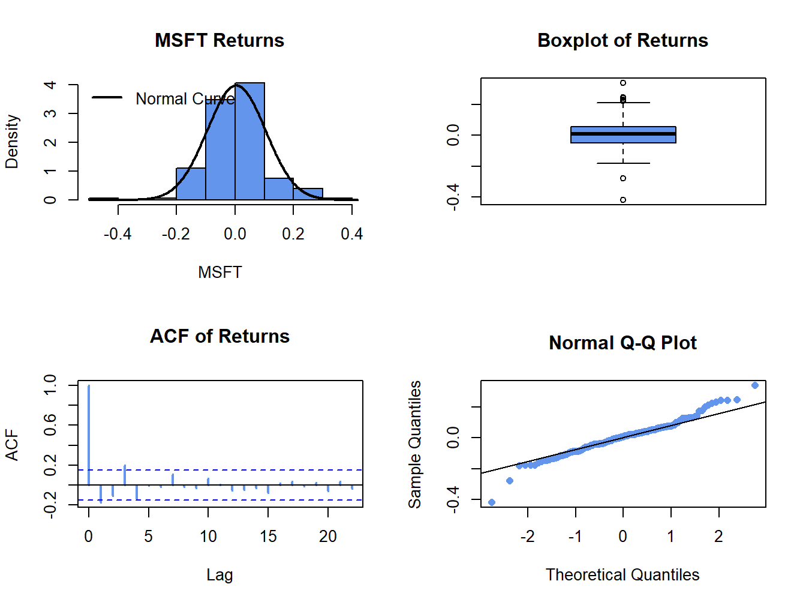
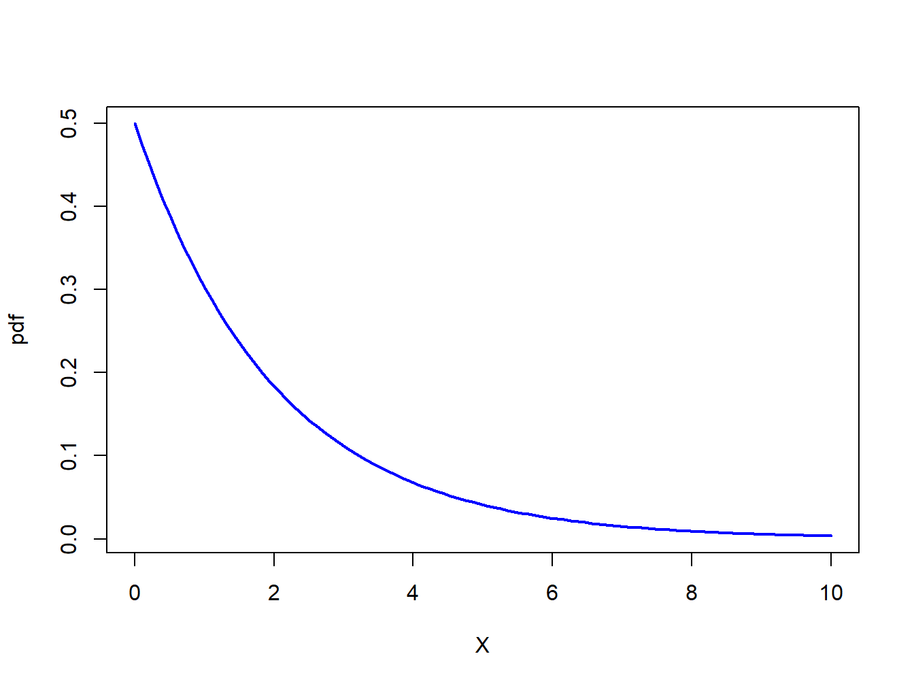
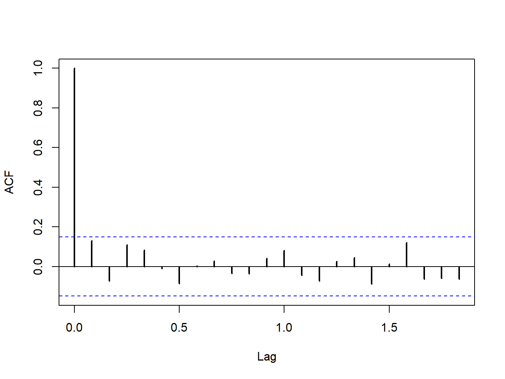

The core of statistical analysis involves estimation and inference. The previous chapters considered estimation of the GWN model parameters, and the computation of standard error estimates and confidence intervals. In this chapter I discuss issues of statistical inference within the GWN model. Statistical inference is about asking questions about a model and using statistical procedures to obtain answers to these questions with a given level of confidence. For example, you might find that our estimate of the monthly mean of an asset return is positive but due to large estimation error we might ask the question: is the true monthly mean return positive? As another example, you might find that a normal qq-plot of returns shows some evidence of non-normality and you ask the question: are returns normally distributed? As a third example, you might find that rolling estimates of the mean and volatility show some evidence of non-constant behavior and you might ask the question: are returns covariance stationary? Statistical hypothesis testing gives us a rigorous framework for answering such questions with a given level of confidence.
The R packages used in this chapter are introcompfinr, PerformanceAnalytics, tseries, and zoo. Make sure this packages are installed and loaded before replicating the examples.
Hypothesis Testing in the GWN Model
Specification tests
Normal distribution
Tests for skewness and kurtosis
JB test
What to do if returns are not normally distributed?
No autocorrelation A. individual and joint tests
Constant parameters (covariance stationarity) A. Formal tests: testing same mean, volatility in sub-samples B. Informal diagnostics - standard error bands on rolling estimators
Using Monte Carlo Simulation to Understand Hypothesis tests
Size
Power
Using the bootstrap for hypothesis tests
exploit duality between hypothesis tests and confidence intervals
Appendix: Distributions for test statistics
Student’s t distribution
Chi-square distribution
9.1 Review of General Principles
Classical hypothesis testing is discussed in almost all introductory textbooks on statistics, and the reader is assumed be familiar with the basic concepts.1 In this section I provide a brief and concise review of the general principles of classical hypothesis testing. In the following sections I apply these principles to answer questions about the GWN model parameters and assumptions.
9.1.1 Steps for hypothesis testing
The main steps for conducting a classical hypothesis test are as follows:
Specify the hypotheses to be tested: \[
H_{0}:\textrm{null hypothesis vs. }H_{1}:\textrm{alternative hypothesis.}
\] The null hypothesis is the maintained hypothesis (what is assumed to be true) and is the hypothesis to be tested against the data. The alternative hypothesis specifies what is assumed to be true if the null hypothesis is false. This can be specific or vague depending on the context.
Specify the significance level of the test: \[
\alpha=\textrm{significance level}=\Pr(\textrm{Reject }H_{0}|H_{0}\,\textrm{is true}).
\] The significance level of a test specifies the probability of making a certain type of decision error: rejecting the null hypothesis when the null hypothesis is, in fact, true. In practice, the significance level \(\alpha\) is chosen to be a small number like \(0.01\) or \(0.05\).
Construct a test statistic, \(S\), from the observed data whose probability distribution is known when \(H_{0}\) is true.
Use the test statistic \(S\) to evaluate the data evidence regarding the validity of \(H_{0}\). Typically, if \(S\) is a big number then there is strong data evidence against \(H_{0}\) and \(H_{0}\) should be rejected; otherwise, there is not strong data evidence against \(H_{0}\) and \(H_{0}\) should not be rejected.
Decide to reject \(H_{0}\) at the specified significance level \(\alpha\) if the value of the test statistic \(S\) falls in the rejection region of the test. Usually, the rejection region for \(S\) is determined by a critical value \(cv_{\alpha}\) such that: \[\begin{eqnarray*}
S & > & cv_{\alpha}\Rightarrow\mathrm{reject}\,H_{0},\\
S & \leq & cv_{\alpha}\Rightarrow\mathrm{do\,not\,reject}\,H_{0}.
\end{eqnarray*}\] Smaller values of \(\alpha\) typically make \(cv_{\alpha}\) larger and require more data evidence (i.e., larger \(S\)) to reject \(H_{0}.\)
Alternatively, decide to reject \(H_{0}\) at the specified significance level \(\alpha\) if the p-value of the test statistic \(S\) is less than \(\alpha\). The p-value of the statistic \(S\) is defined as the significance level at which the test is just rejected.
9.1.2 Hypothesis tests and decisions
Hypothesis testing involves making a decision: reject \(H_{0}\) or do not reject \(H_{0}.\) Notice that if the data evidence strongly favors \(H_{0}\) then you say “I do not reject \(H_{0}\)” instead of “accept \(H_{0}\)”. You can rarely know the truth with absolute certainty with a finite amount of data so it is more appropriate to say “do not reject \(H_{0}\)” than to say “accept \(H_{0}\)”.2
Table 9.1: Decision table for hypothesis testing
Reality
\(H_{0}\) is true
\(H_{0}\) is false
Decision
Reject \(H_{0}\)
Type I error
No error
Do not reject \(H_{0}\)
No error
Type II error
Table Table 9.1 shows the \(2\times2\) decision table associated with hypothesis testing. In reality there are two states of the world: either \(H_{0}\) is true or it is not.3 There are two decisions to make: reject \(H_{0}\) or don’t reject \(H_{0}.\) If the decision corresponds with reality then the correct decision is made and there is no decision error. This occurs in the off-diagonal elements of the table. If the decision and reality disagree then there is a decision error. These errors are in the diagonal elements of the table. Type I error results when the decision to reject \(H_{0}\) occurs when, in fact, \(H_{0}\) is true. Type II error happens when the decision not to reject \(H_{0}\) occurs when \(H_{0}\) is false. To put these types of errors in context, consider a jury in a capital murder trial in the US.4 In the US, a defendant is considered innocent until proven guilty. Here, the null hypothesis to be tested is: \[
H_{0}:\textrm{defendant is innocent}.
\] The alternative is: \[
H_{1}:\textrm{defendant is guilty}.
\]
There is a true state of the world here: the defendant is either innocent or guilty. The jury must decide what the state of the world is based on evidence presented to them. The decision table for the jury is shown in Table Table 9.2. Type I error occurs when the jury convicts an innocent defendant and puts that person on “death row”. Clearly, this is a terrible mistake. To avoid this type of mistake the jury should have a very small (close to zero) significance level for evaluating evidence so that Type I error very rarely occurs. This is why typical jury instructions are to convict only if evidence of guilt is presented beyond reasonable doubt. Type II error happens when the jury does not convict (acquits) a guilty defendant and sets that person free. This is also a terrible mistake, but perhaps it is not as terrible as convicting the innocent person. Notice that there is a conflict between Type I error and Type II error. In order to completely eliminate Type I error, you can never reject \(H_{0}\). That is, to avoid ever sending innocent people to “death row” you must never convict anyone. But if you never convict anyone then you never convict guilty people either and this increases the occurrences of Type II errors.
9.1.3 Significance level and power
The significance level of a test is the probability of Type I error: \[
\alpha=\Pr(\textrm{Type I error})=\Pr(\textrm{Reject}\,H_{0}|H_{0}\,\textrm{is true}).
\] The power of a test is one minus the probability of Type II error: \[
\pi=1-\Pr(\textrm{Type II error})=\Pr(\textrm{Reject }H_{0}|H_{0}\,\textrm{is false}).
\] In classical hypothesis tests, the goal is to construct a test that has a small significance level (\(\alpha\) close to zero) that you can control and has high power (\(\pi\) close to one). That is, a good test is one that has a small and controllable probability of rejecting the null when it is true and, at the same time, has a very high probability of rejecting the null when it is false. In general, an optimal test is one that has the highest possible power for a given significance level. In the jury example, an optimal test would be the one in which the jury has the highest probability of convicting a guilty defendant while at the same time has a very low probability of convicting an innocent defendant. A difficult problem indeed!
Table 9.2: Decision table for jury on capital murder trial
Reality
Defendant is innocent
Defendant is guilty
Decision
Convict
Type I error
No error
Acquit
No error
Type II error
9.2 Hypothesis Testing in the GWN Model
In this section, I discuss hypothesis testing in the context of the GWN model for asset returns:
In Equation 9.1, \(R_{it}\) is the monthly return (continuously compounded or simple) on asset \(i\) in month \(t\). Define \(\mathbf{R}_{t}=(R_{1t},\ldots,R_{Nt})^{\prime}\). The GWN model in matrix form is:
I consider two types of hypothesis tests: (1) tests for model coefficients or functions of model coefficients; and (2) tests for model assumptions.5 These tests can be specified for the GWN model for a single asset using Equation 9.1, or they can be specified for the GWN model for all assets using Equation 9.2.
9.2.1 Coefficient tests
Here, I assume that the GWM is the true model for our observed return data and I are interested in asking questions about the parameters of the model. The most common tests for model coefficients and functions of model coefficients for a single asset are tests for a specific value. Some typical hypotheses to be tested are:
\[\begin{align*}
H_{0} & :\mu_{i}=\mu_{i}^{0}\text{ vs. }H_{1}:\mu_{i}\neq\mu_{i}^{0},\\
H_{0} & :\sigma_{i}=\sigma_{i}^{0}\text{ vs. }H_{1}:\sigma_{i}\neq\sigma_{i}^{0},\\
H_{0} & :\rho_{ij}=\rho_{ij}^{0}\text{ vs. }H_{1}:\rho_{ij}\neq\rho_{ij}^{0}, \\
H_{0} & :\mathrm{SR}_{i}=\mathrm{SR}_{i}^{0}\text{ vs. }H_{1}:\mathrm{SR}_{i}\neq\mathrm{SR}_{i}^{0},
\end{align*}\]
where \(\mathrm{SR}_{i} = \frac{\mu_i - r_f}{\sigma_i}\) is the Sharpe ratio of asset \(i\) and \(r_f\) is the risk-free rate of interest. A hypothesis about the Sharpe ratio is a hypothesis about the ratio of two GWN model parameters. In the above hypotheses, the alternative hypotheses are two-sided. That is, under \(H_{1}\) the model parameters are either larger or smaller than what is specified under \(H_{0}\).
Also common are tests for specific sign. For example:
\[\begin{align*}
H_{0} & :\mu_{i}=0\text{ vs. }H_{1}:\mu_{i}>0\text{ or }H_{1}:\mu_{i}<0,\\
H_{0} & :\rho_{ij}=0\text{ vs. }H_{1}:\rho_{ij}>0\text{ or }H_{1}:\rho_{ij}<0, \\
H_{0} & :\mathrm{SR}_{i}=0\text{ vs. }H_{1}:\mathrm{SR}_{i}>0\text{ or }H_{1}:\mathrm{SR}_{i}<0,
\end{align*}\]
Here, the alternative hypotheses are one-sided. That is, under \(H_{1}\) the model parameter is either greater than zero or less than zero.
Sometimes you are interested in testing hypotheses about the relationship between model coefficients for two or more assets. For example:
In the GWN model Equation 9.1, asset returns are assumed to be normally distributed. The hypotheses to be tested for this assumption are:
\[\begin{align*}
H_{0}: & R_{it}\sim N(\mu_{i},\sigma_{i}^{2})\,\textrm{vs. }H_{1}:R_{it}\sim\textrm{ not normal.}
\end{align*}\]
Notice that the distribution of \(R_{t}\) under \(H_{1}\) is not specified (e.g., Student’s t with 5 degrees of freedom).
In addition, it is assumed that asset returns are uncorrelated over time. One can test the hypothesis that each autocorrelation (up to some maximum lag \(J\)) is zero:
Lastly, it is assumed that asset returns are covariance stationary. This assumption implies that all model parameters are constant over time. The hypotheses of interest are then:
\[\begin{align*}
H_{0} & :\mu_{i},\sigma_{i}\text{ and }\rho_{ij}\text{ are constant over entire sample, vs.}\\
H_{1} & :\mu_{i}\text{ }\sigma_{i}\text{ or }\rho_{ij}\text{ changes in some sub-sample.}
\end{align*}\]
The following sections describe test statistics for the above listed hypotheses.
9.2.3 Data for hypothesis testing examples
The examples in this chapter use the monthly continuously compounded returns on Microsoft, Starbucks and the S&P 500 index over the period January 1998 through May 2012 created using:
Figure 9.1: Monthly cc returns on Microsoft, Starbucks and the S&P 500 Index.
9.3 Tests for Individual Parameters: t-tests and z-scores
In this section, I present test statistics for testing hypotheses that certain model coefficients equal specific values. In some cases, I can derive exact tests. For an exact test, the pdf of the test statistic assuming the null hypothesis is true is known exactly for a finite sample size \(T\). More generally, however, I rely on asymptotic tests. For an asymptotic test, the pdf of the test statistic assuming the null hypothesis is true is not known exactly for a finite sample size \(T\), but can be approximated by a known pdf. The approximation is justified by the Central Limit Theorem (CLT) and the approximation becomes exact as the sample size becomes infinitely large.
9.3.1 Exact tests under normality of data
In the GWN model Equation 9.1, consider testing the hypothesis that the mean return, \(\mu_{i}\), is equal to a specific value \(\mu_{i}^{0}\):
\[
H_{0}:\mu_{i}=\mu_{i}^{0}.
\tag{9.3}\]
For example, an investment analyst may have provided an expected return forecast of \(\mu_{i}^{0}\) and you would like to see if past data was consistent with such a forecast.
The alternative hypothesis can be either two-sided or one-sided. The two-sided alternative is: \[
H_{1}:\mu_{i}\neq\mu_{i}^{0}.
\tag{9.4}\] Two-sided alternatives are used when you don’t care about the sign of \(\mu_{i}-\mu_{i}^{0}\) under the alternative. With one-sided alternatives, you care about the sign of \(\mu_{i}-\mu_{i}^{0}\) under the alternative: \[
H_{1}:\mu_{i}>\mu_{i}^{0}\,\textrm{ or }\,H_{1}:\mu_{i}<\mu_{i}^{0}.
\tag{9.5}\]
How do you come up with a test statistic \(S\) for testing Equation 9.3 against Equation 9.4 or Equation 9.5? You generally use two criteria: (1) you know the pdf of \(S\) assuming Equation 9.3 is true; and (2) the value of \(S\) should be big if the alternative hypotheses Equation 9.4 or Equation 9.5 are true.
9.3.1.1 Two-sided test
To simplify matters, let’s assume that the value of \(\sigma_{i}\) in Equation 9.1 is known and does not need to be estimated. This assumption is unrealistic and will be relaxed later. Consider testing Equation 9.3 against the two-sided alternative Equation 9.4 using a 5% significance level. Two-sided alternatives are typically more commonly used than one-sided alternatives. Let \(\{R_{t}\}_{t=1}^{T}\) denote a random sample from the GWN model. You estimate \(\mu_{i}\) using the sample mean:
Under the null hypothesis Equation 9.3, it is assumed that \(\mu_{i}=\mu_{i}^{0}\). Hence, if the null hypothesis is true then \(\hat{\mu}_{i}\) computed from data should be close to \(\mu_{i}^{0}\). If \(\hat{\mu}_{i}\) is far from \(\mu_{i}^{0}\) (either above or below \(\mu_{i}^{0}\)) then this evidence casts doubt on the validity of the null hypothesis. Now, there is estimation error in Equation 9.6 which is measured by:
Because you assume \(\sigma_{i}\) is known, you also know \(\mathrm{se}(\hat{\mu}_{i})\). Because of estimation error, you don’t expect \(\hat{\mu}_{i}\) to equal \(\mu_{i}^{0}\) even if the null hypothesis Equation 9.3 is true. How far from \(\mu_{i}^{0}\) can \(\hat{\mu}_{i}\) be if the null hypothesis is true? To answer this question, recall from Chapter Chapter 7 that the exact (finite sample) pdf of \(\hat{\mu}_{i}\) is the normal distribution:
Hence, if the null hypothesis Equation 9.3 is true you only expect to see \(\hat{\mu}_{i}\) more than \(1.96\) values of \(\mathrm{se}(\hat{\mu}_{i})\) away from \(\mu_{i}^{0}\) with probability 0.05.6 Therefore, it makes intuitive sense to base a test statistic for testing Equation 9.3 on a measure of distance between \(\hat{\mu}_{i}\) and \(\mu_{i}^{0}\) relative to \(\mathrm{se}(\hat{\mu}_{i})\). Such a statistic is the z-score:
Assuming the null hypothesis Equation 9.3 is true, from Equation 9.9 it follows that: \[
z_{\mu=\mu^{0}}\sim N(0,1).
\]
The intuition for using the z-score Equation 9.11 to test Equation 9.3 is straightforward. If \(z_{\mu=\mu^{0}}\approx0\) then \(\hat{\mu}_{i}\approx\mu_{i}^{0}\) and Equation 9.3 should not be rejected. In contrast, if \(z_{\mu=\mu^{0}}>1.96\) or \(z_{\mu=\mu^{0}}<-1.96\) then \(\hat{\mu}_{i}\) is more than \(1.96\) values of \(\mathrm{se}(\hat{\mu}_{i})\) away from \(\mu_{i}^{0}\). From Equation 9.10, this is very unlikely (less than 5% probability) if Equation 9.3 is true. In this case, there is strong data evidence against Equation 9.3 and you should reject it. Notice that the condition \(z_{\mu=\mu^{0}}>1.96\textrm{ or }z_{\mu=\mu^{0}}<-1.96\) can be simplified as the condition \(\left|z_{\mu=\mu^{0}}\right|>1.96\). When \(\left|z_{\mu=\mu^{0}}\right|\) is big, larger than 1.96, you have data evidence against Equation 9.3. Using the value \(1.96\) to determine the rejection region for the test ensures that the significance level (probability of Type I error) of the test is exactly 5%:
The 5% critical value is \(cv_{.05}=1.96\), and you reject Equation 9.3 at the 5% significance level if \(S>1.96\).
In summary, the steps for using \(S=\left|z_{\mu=\mu^{0}}\right|\) to test the Equation 9.3 against Equation 9.4 are:
Set the significance level \(\alpha=\Pr(\textrm{Reject } H_{0}|H_{0}\,\textrm{is true})\) and determine the critical value \(cv_{\alpha}\) such that \(\Pr(S>cv_{\alpha})=\alpha\). Now,
which implies that \(cv_{\alpha}=-q_{\alpha/2}^{Z}=q_{1-\alpha/2}^{Z}\), where \(q_{\alpha/2}^{Z}\) denotes the \(\frac{\alpha}{2}-\)quantile of \(Z\sim N(0,1)\). For example, if \(\alpha=.05\) then \(cv_{.05}=-q_{.025}^{Z}=1.96.\)
Reject Equation 9.3 at the \(\alpha\times100\%\) significance level if \(S>cv_{\alpha}\). For example, if \(\alpha=.05\) then reject Equation 9.3 at the 5% level if \(S>1.96\).
Equivalently, reject Equation 9.3 at the \(\alpha\times100\%\) significance level if the p-value for \(S\) is less than \(\alpha\). Here, the p-value is defined as the significance level at which the test is just rejected. Let \(Z\sim N(0,1)\). The p-value is computed as: \[
\textrm{p-value} = \Pr(|Z|>S)=\Pr(Z>S)+\Pr(Z<-S) = 2\times \Pr(Z>S)=2\times(1-\Pr(Z<S)).
\tag{9.13}\]
Example 9.1 (Testing hypothesis with the z-score using simulated data: two-sided tests) Assume returns follow the GWN model
and you are interested in testing the following hypotheses \[\begin{align*}
H_{0}:\mu=0.05\,\,vs.\,\,H_{1}:\mu\neq.05 \\
H_{0}:\mu=0.06\,\,vs.\,\,H_{1}:\mu\neq.06 \\
H_{0}:\mu=0.10\,\,vs.\,\,H_{1}:\mu\neq.10 \\
\end{align*}\]
using the test statistic Equation 9.12 with a 5% significance level. The 5% critical value is \(cv_{.05}=1.96\). One hypothetical sample from the hypothesized model is simulated using:
Code
set.seed(123)n.obs =60mu =0.05sigma =0.10ret.sim = mu +rnorm(n.obs, sd = sigma)
The estimate of \(\mu\) and the value of \(\mathrm{se}(\hat{\mu})\) are:
The z-score tells us that the estimated mean, \(\hat{\mu}=0.0566\), is 0.58 values of \(\mathrm{se}(\hat{\mu})\) away from the hypothesized value \(\mu^0=0.05\). This evidence does not contradict \(H_0:\mu=0.05\). Since \(S=0.508 < 1.96\), you do not reject \(H_0:\mu=0.05\) at the 5% significance level. The p-value of the test using Equation 9.13 is:
Code
p.value =2*(1-pnorm(S))p.value#> [1] 0.611
Here, the p-value of 0.611 is less than the significance level \(\alpha = 0.05\) so you do not reject the null at the 5% significance level. The p-value tells us that you would reject \(H0:\mu=0.05\) at the 61.1% significance level.
The z-score information for testing \(H_0:\mu=0.06\) is:
Here, the z-score indicates that \(\hat{\mu}=0.0566\) is just 0.266 values of \(\mathrm{se}(\hat{\mu})\) away from the hypothesized value \(\mu^0=0.06\). This evidence also does not contradict \(H_0:\mu=0.06\). Since \(S=0.226 < 1.96\), you do not reject \(H_0:\mu=0.06\) at the 5% significance level. The p-value of the test is:
Code
p.value =2*(1-pnorm(S))p.value#> [1] 0.79
The large p-value shows that there is insufficient data to reject \(H_0:\mu=0.06\).
Last, the z-score information for testing \(H_0:\mu=0.10\) is:
Now, the z-score indicates that \(\hat{\mu}=0.0566\) is 3.36 values of \(\mathrm{se}(\hat{\mu})\) away from the hypothesized value \(\mu^0=0.10\). This evidence is not in support of \(H_0:\mu=0.10\). Since \(S=3.36 > 1.96\), you reject \(H_0:\mu=0.06\) at the 5% significance level. The p-value of the test is:
Code
p.value =2*(1-pnorm(S))p.value#> [1] 0.000766
Here, the p-value is much less 5% supporting the rejection of \(H_0:\mu=0.06\). \(\blacksquare\)
9.3.1.2 One-sided test
Here, I consider testing the null Equation 9.3 against the one-sided alternative Equation 9.5. For expositional purposes, consider \(H_{1}:\mu_{i} > \mu_{i}^{0}\). This alternative can be equivalently represented as \(H_{1}:\mu_{i} - \mu_{i}^{0} > 0\). That is, under the alternative hypothesis the sign of the difference \(\mu_{i} - \mu_{i}^{0}\) is positive. This is why a test against a one-sided alternative is sometimes called a test for sign. As in the previous sub-section, assume that \(\sigma_i\) is known and let the significance level be \(5\%\).
The natural test statistic is the z-score Equation 9.11. The intuition is straightforward. If \(z_{\mu=\mu^0} \approx 0\) then \(\hat{\mu}_i \approx \mu_i^0\) and the null should not be rejected. However, if the one-sided alternative is true then you would expect to see \(\hat{\mu}_i > \mu_i^0\) and \(z_{\mu=\mu^0} > 0\). How big \(z_{\mu=\mu^0}\) needs to be for us to reject the null depends on the significance level. Since under the null \(z_{\mu=\mu^0} \sim N(0,1) = Z\), with a \(5\%\) significance level
\[
\Pr(\text{Reject } H_0 | H_0 \text{ is true}) = \Pr(z_{\mu=\mu^0} > 1.645) = \Pr(Z > 1.645) = 0.05.
\] Hence, our \(5\%\) one-sided critical value is \(cv_{.05}=q_{.95}^Z = 1.645\), and you reject the null at the \(5\%\) significance level if \(z_{\mu=\mu^0} >1.645\).
In general, the steps for using \(z_{\mu=\mu^0}\) to test Equation 9.3 against the one-sided alternative \(H_{1}:\mu_{i} > \mu_{i}^{0}\) are:
Set the significance level \(\alpha=\Pr(\textrm{Reject } H_{0}|H_{0}\,\textrm{is true})\) and determine the critical value \(cv_{\alpha}\) such that \(\Pr(z_{\mu=\mu^0}>cv_{\alpha})=\alpha\). Since under the null \(z_{\mu=\mu^0} \sim N(0,1) = Z\), \(cv_{\alpha} = q_{1-\alpha}^Z\).
Reject the null hypothesis Equation 9.3 at the \(\alpha \times 100\%\) significance level if \(z_{\mu=\mu^0} > cv_{\alpha}\).
Equivalently, reject Equation 9.3 at the \(\alpha \times 100\%\) significance level if the one-sided p-value is less than \(\alpha\), where
Example 9.2 (Testing hypothesis with the z-score using simulated data: one-sided tests) Here, I use the simulated GWN return data from the previous example to test Equation 9.3 against the one-sided alternative \(H_{1}:\mu_{i} > \mu_{i}^{0}\) using a 5% significance level.
The z-scores and one-sided p-values for testing \(H_0:\mu=0.05\), \(H_0:\mu=0.06\), and \(H_0:\mu=0.10\), computed from the simulated sample are:
Here, you do not reject any of the null hypotheses in favor of the one-sided alternative at the 5% significance level. \(\blacksquare\)
9.3.2 Exact tests with \(\sigma\) unknown
In practice, \(\sigma^2\) is unknown and is estimated with \(\hat{\sigma}^2\), and so the exact tests described above are not feasible. Fortunately, an exact test is still available. Instead of using the z-score Equation 9.11, we use the t-ratio (or t-score)
Assuming the null hypothesis Equation 9.3 is true, Proposition 7.7 tells us that Equation 9.14 is distributed Student’s t with \(T-1\) degrees of freedom and is denoted by the random variable \(t_{T-1}\). The steps for using the z-score and the t-ratio are the same for evaluating Equation 9.3, but now we use critical values and p-values from \(t_{T-1}\). Our test statistic for the two-sided alternative \(H_0:\mu_i \ne \mu_i^0\) is: \[
S = \left|t_{\mu=\mu^{0}}\right|,
\tag{9.15}\]
and our test statistic for the one-sided alternative \(H_0:\mu_i > \mu_i^0\) is
\[
S = t_{\mu=\mu^{0}},
\tag{9.16}\]
Our critical values are determined from the quantiles of the Student’s t with \(T-1\) degrees of freedom, \(t_{T-1}(1-\alpha/2)\). For example, if \(\alpha=0.05\) and \(T-1=60\) then the two-sided critical value is \(cv_{.05} = t_{60}(0.975)=2\) (which can be verified using the R function qt()). The two-sided p-value is computed as:
As the sample size gets larger \(\hat{\sigma}_{i}\) gets closer to \(\sigma_{i}\) and the Student’s t distribution gets closer to the normal distribution. Decisions using the t-ratio and the z-score are almost the same for \(T \ge 60\).
Example 9.3 (Testing hypothesis with the t-ratio using simulated data) I repeat the hypothesis testing from the previous example this time use the t-ratio Equation 9.14 instead of the z-score. Using \(T-1=59\) the 5% critical value for the two-sided test is
Code
qt(0.975, df=59)#> [1] 2
To compute the t-ratios we first estimate \(\mathrm{se}(\hat{\mu})\):
Here, \(\widehat{\mathrm{se}}(\hat{\mu}) = 0.0118 < 0.0129 = \mathrm{se}(\hat{\mu})\) and so the t-ratios will be slightly larger than the z-scores. The t-ratios and test statistics for the three hypotheses are:
As expected the test statistics computed from the t-ratios are slightly larger than the tests computed from the z-scores. The first two statistics are less than 2, and the third statistic is bigger than 2 and so we reach the same decisions as before. The p-values of the three tests are:
Here, the p-values computed from \(t_{59}\) are very similar to those computed from \(Z\sim N(0,1)\). \(\blacksquare\)
You can derive an exact test for testing hypothesis about the value of \(\mu_{i}\) based on the z-score or the t-ratio, but you cannot derive exact tests for the values of \(\sigma_{i}\) or for the values of \(\rho_{ij}\) based on z-scores. Exact tests for these parameters are much more complicated. While t-ratios for the values of \(\sigma_{i}\) or for the values of \(\rho_{ij}\) do not have exact t-distributions in finite samples, as the sample size gets large the distributions of the t-ratios get closer and closer to the normal distribution due to the CLT. This motivates the use of so-called asymptotic z-scores discussed in the next sub-section.
9.3.3 Z-scores under asymptotic normality of estimators
Let \(\hat{\theta}\) denote an estimator for \(\theta\). Here, I allow \(\theta\) to be a GWN model parameter or a function of GWN model parameters. For example, in the GWN model \(\theta\) could be \(\mu_{i}\), \(\sigma_{i},\), \(\rho_{ij}\), \(q_{\alpha}^R\), \(\mathrm{VaR}_{\alpha}\) or \(\mathrm{SR}_i\). As you have seen, the CLT (and the delta method if needed) justifies the asymptotic normal distribution:
for large enough sample size \(T\), where \(\widehat{\mathrm{se}}(\hat{\theta})\) is the estimated standard error for \(\hat{\theta}\). Consider testing:
\[
H_{0}:\theta=\theta_{0}\text{ vs. }H_{1}:\theta\neq\theta_{0}.
\tag{9.18}\]
Under \(H_{0},\) the asymptotic normality result Equation 9.17 implies that the z-score for testing Equation 9.18 has a standard normal distribution for large enough sample size \(T\):
The intuition for using the z-score Equation 9.19 is straightforward. If \(z_{\theta=\theta_{0}}\approx0\) then \(\hat{\theta}\approx\theta_{0},\) and \(H_{0}:\theta=\theta_{0}\) should not be rejected. On the other hand, if \(|z_{\theta=\theta_{0}}|>2\), say, then \(\hat{\theta}\) is more than \(2\) values of \(\widehat{\mathrm{se}}(\hat{\theta})\) away from \(\theta_{0}.\) This is very unlikely if \(\theta=\theta_{0}\) because \(\hat{\theta}\sim N(\theta_{0},\mathrm{\widehat{se}}(\hat{\theta})^{2}),\) so \(H_{0}:\theta\neq\theta_{0}\) should be rejected. Therefore, the test statistic for testing Equation 9.19 is \(S = |z_{\theta=\theta_{0}}|\).
The steps for using the z-score Equation 9.19 with its critical value to test the hypotheses Equation 9.18 are:
Set the significance level \(\alpha\) of the test and determine the two-sided critical value \(cv_{\alpha/2}\). Using Equation 9.17, the critical value, \(cv_{\alpha/2},\) is determined using: \[\begin{align*}
\Pr(|Z| & \geq cv_{\alpha/2})=\alpha\\
& \Rightarrow cv_{\alpha/2}=-q_{\alpha/2}^{Z}=q_{1-\alpha/2}^{Z},
\end{align*}\] where \(q_{\alpha/2}^{Z}\) denotes the \(\frac{\alpha}{2}-\)quantile of \(N(0,1)\). A commonly used significance level is \(\alpha=0.05\) and the corresponding critical value is \(cv_{.025}=-q_{.025}^{Z}=q_{.975}^{Z}=1.96\approx2\).
Reject Equation 9.18 at the \(100\times\alpha\)% significance level if: \[
S = |z_{\theta=\theta_{0}}|=\left\vert \frac{\hat{\theta}-\theta^{0}}{\widehat{\mathrm{se}}(\hat{\theta})}\right\vert >cv_{\alpha/2}.
\] If the significance level is \(\alpha=0.05\), then reject Equation 9.18 at the 5% level using the rule-of-thumb: \[
S=|z_{\theta=\theta_{0}}|>2.
\]
The steps for using the z-score Equation 9.19 with its p-value to test the hypotheses Equation 9.18 are:
Determine the two-sided p-value. The p-value of the two-sided test is the significance level at which the test is just rejected. From Equation 9.17, the two-sided p-value is defined by \[
\textrm{p-value}=\Pr\left(|Z|>|z_{\theta=\theta_{0}}|\right)=2\times(1-\Pr\left(Z\leq|z_{\theta=\theta_{0}}|\right).
\tag{9.20}\]
Reject Equation 9.18 at the \(100\times\alpha\)% significance level if the p-value Equation 9.20 is less than \(\alpha\).
Example 9.4 (Using the z-score to test hypothesis about () in the GWN model) Consider using the z-score Equation 9.19 to test \(H_{0}:\,\mu_{i}=0\,vs.\,H_{1}:\mu_{i}\neq0\) (\(i=\)Microsoft, Starbucks, S&P 500) using a 5% significance level. First, calculate the GWN model estimates for \(\mu_{i}\):
Since all p-values are greater than \(\alpha=0.05\), you reject \(H_{0}:\,\mu_{i}=0\) at the 5% level for all assets. The p-value for Starbucks is the smallest at 0.0851. Here, you can reject \(H_{0}:\,\mu_{SBUX}=0\) at the 8.51% level. \(\blacksquare\)
Example 9.5 (Using the z-score to test hypothesis about \(\rho\) in the GWN model) Consider using the z-score Equation 9.19 to test the hypotheses:
using a 5% significance level. Here, you use the result from the GWN model that for large enough \(T\): \[
\hat{\rho}_{ij}\sim N\left(\rho_{ij},\,\widehat{\mathrm{se}}(\hat{\rho}_{ij})^2\right),\,\widehat{\mathrm{se}}(\hat{\rho}_{ij})=\frac{1-\hat{\rho}_{ij}^{2}}{\sqrt{T}}.
\] Then the z-score for testing Equation 9.21 has the form: \[
z_{\rho_{ij}=0.5}=\frac{\hat{\rho}_{ij}-0.5}{\widehat{\mathrm{se}}(\hat{\rho}_{ij})}=\frac{\hat{\rho}_{ij}-0.5}{\left(1-\hat{\rho}_{ij}^{2}\right)/\sqrt{T}}.
\tag{9.22}\] To compute the z-scores, first, calculate the GWN model estimates for \(\rho_{ij}\):
Here, the absolute value of the z-scores for \(\rho_{MSFT,SBUX}\) and \(\rho_{MSFT,SP500}\) are greater than 2 whereas the absolute value of the z-score for \(\rho_{SBUX,SP500}\) is less than 2. Hence, for the pairs (MSFT, SBUX) and (MSFT, SP500) you cannot reject the null Equation 9.21 at the 5% level but for the pair (SBUX, SP500) you can reject the null at the 5% level. The p-values for the test statistics are:
Here, the p-values for the pairs (MSFT,SBUX) and (MSFT,SP500) are less than 0.05 and the p-value for the pair (SBUX, SP500) is much greater than 0.05. \(\blacksquare\)
Example 9.6 (Using the z-score to test hypothesis about asset Sharpe ratios in the GWN model) Consider using the z-score to test the hypotheses:
\[
H_0: \mathrm{SR}_i = \frac{\mu_i - r_f}{\sigma_i} = 0 \text{ vs. } H_1: \mathrm{SR}_i > 0
\] using a 5% significance level. In Chapter Chapter 8 I used the delta method to show that, for large enough \(T\):
\[
\widehat{\mathrm{SR}}_i \sim N\left(\mathrm{SR}_i, \widehat{\mathrm{se}}\left(\widehat{\mathrm{SR}}_i\right)^2\right), ~ \widehat{\mathrm{se}}\left(\widehat{\mathrm{SR}}_i\right) = \frac{1}{\sqrt{T}}\sqrt{1+\frac{1}{2}\widehat{\mathrm{SR}}_i^2}
\] Then, the z-score has the form
9.3.4 Relationship between hypothesis tests and confidence intervals
Consider testing the hypotheses Equation 9.18 at the 5% significance level using the z-score Equation 9.19. The rule-of-thumb decision rule is to reject \(H_{0}:\,\theta=\theta_{0}\) if \(|z_{\theta=\theta_{0}}|>2\). This implies that:
\[\begin{eqnarray*}
\frac{\hat{\theta}-\theta_{0}}{\widehat{\mathrm{se}}(\hat{\theta})} & > & 2\,\mathrm{~ or }\,\frac{\hat{\theta}-\theta_{0}}{\widehat{\mathrm{se}}(\hat{\theta})}<-2,
\end{eqnarray*}\]
which further implies that: \[
\theta_{0}<\hat{\theta}-2\times\widehat{\mathrm{se}}(\hat{\theta})\,\mathrm{\,or}\,\,\theta_{0}>\hat{\theta}+2\times\widehat{\mathrm{se}}(\hat{\theta}).
\] Recall the definition of an approximate 95% confidence interval for \(\theta\): \[
\hat{\theta}\pm2\times\widehat{\mathrm{se}}(\hat{\theta})=\left[\hat{\theta}-2\times\widehat{\mathrm{se}}(\hat{\theta}),\,\,\hat{\theta}+2\times\widehat{\mathrm{se}}(\hat{\theta})\right].
\] Notice that if \(|z_{\theta=\theta_{0}}|>2\) then \(\theta_{0}\) does not lie in the approximate 95% confidence interval for \(\theta\). Hence, you can reject \(H_{0}:\,\theta=\theta_{0}\) at the 5% significance level if \(\theta_{0}\) does not lie in the 95% confidence for \(\theta\). This result allows you to have a deeper understanding of the 95% confidence interval for \(\theta\): it contains all values of \(\theta_{0}\) for which you cannot reject \(H_{0}:\,\theta=\theta_{0}\) at the 5% significance level.
This duality between two-sided hypothesis tests and confidence intervals makes hypothesis testing for individual parameters particularly simple. As part of estimation, you calculate estimated standard errors and form approximate 95% confidence intervals. Then when you look at the approximate 95% confidence interval, it gives us all values of \(\theta_{0}\) for which you cannot reject \(H_{0}:\,\theta=\theta_{0}\) at the 5% significance level (approximately).
Example 9.7 (Hypothesis testing for \(\mu_{i}\), \(\rho_{ij}\), and \(\mathrm{SR}_i\) using 95% confidence intervals) For the example data, the approximate 95% confidence intervals for \(\mu_{i}\) for Microsoft, Starbucks and the S&P 500 index are:
Consider testing \(H_{0}:\mu_{i}=0\) at the 5% level. Here you see that \(\mu_{i}^{0}=0\) lies in all of the 95% confidence intervals and so you do not reject \(H_{0}:\mu_{i}=0\) at the 5% level for any asset. Each interval gives the values of \(\mu_{i}^{0}\) for which you cannot reject \(H_{0}:\mu_{i}=\mu_{i}^{0}\) at the 5% level. For example, for Microsoft you cannot reject the hypothesis (at the 5% level) that \(\mu_{MSFT}\) is as small as -0.011 or as large as 0.019.
Next, the approximate 95% confidence intervals for \(\rho_{ij}\) for the pairs \(\rho_{MSFT,SBUX}\), \(\rho_{MSFT,SP500}\), and \(\rho_{SBUX,SP500}\) are:
Consider testing \(H_{0}:\rho_{ij}=0.5\) for all pairs of assets. Here, you see that \(\rho_{ij}^{0}=0.5\) is not in the approximate 95% confidence intervals for \(\rho_{MSFT,SBUX}\) and \(\rho_{MSFT,SP500}\) but is in the approximate 95% confidence interval for \(\rho_{SBUX,SP500}\). Hence, you can reject \(H_{0}:\rho_{ij}=0.5\) at the 5% significance level for \(\rho_{MSFT,SBUX}\) and \(\rho_{MSFT,SP500}\) but not for \(\rho_{SBUX,SP500}\).
Add SR info here
\(\blacksquare\)
9.4 Coefficient tests between model coefficients for two assets
In this section I consider hypothesis tests for coefficients in the bivariate GWN model for asset returns.
9.4.1 Test for equal means between two assets
Often it is of interest to test if the expected returns on two assets are the same:
Notice that this hypothesis is not of the form that the two coefficients equal a specific value (e.g. \(\mu_1 = \mu_2 = 0.05\)). However, you can transform the hypothesis into one in which a coefficient equals a specific value by considering the differences in the expected returns. In particular, the relation \(\mu_1 = \mu_2\) is equivalent to the relation \(\delta = \mu_1 - \mu_2 = 0\). Hence, you can reformulate the hypothesis of equal expected returns to the hypothesis that the difference in expected returns is equal to zero:
To evaluate Equation 9.24, you use the result from Chapter 7 that the joint distribution of the vector \((\hat{\mu}_1,\hat{\mu}_2)'\) is multivariate normal: \[
\left( \begin{array}{c} \hat{\mu}_1 \\ \hat{\mu}_2 \end{array} \right) = N \left( \left( \begin{array}{c} \mu_1 \\ \mu_2 \end{array} \right), ~ \frac{1}{T} \left( \begin{array}{cc} \hat{\sigma}_1^2 & \hat{\sigma}_{12} \\
\hat{\sigma}_{12} & \hat{\sigma}_2^2 \end{array} \right) \right),
\]
with the test statistic \(S=\left| z_{\delta=0} \right|\).
The estimate \(\widehat{\mathrm{var}}(\hat{\delta})\) can also be computed using the delta method. Define \(\theta = (\mu_1,\mu_2)'\) and \(f(\theta)=\delta = \mu_1 - \mu_2\). The gradient of \(f(\theta)\) is:
Example 9.8 (Testing that Microsoft and Starbucks have the same expected return.) Let’s use the z-score Equation 9.25 to test the hypothesis that the expected returns on Microsoft and Starbucks are the same using a 5% significance level. The R code to compute the z-score and test statistic is:
Here, \(\hat{\delta}=-0.0105\), \(\widehat{\mathrm{se}}(\hat{\delta})=0.0093\) and \(S=1.1323\). Since \(S < 2\) you do not reject \(H_0:\delta = \mu_{msft} - \mu_{sbux}=0\) at the 5% level. \(\blacksquare\)
9.4.2 Test for equal Sharpe ratios between two assets
In the previous section, I considered testing if two assets have the same expected return. It is important to recognize that even if two assets have the same mean return they may have different standard deviations (volatilities) and, hence, different risks. Often, it is more interesting to test the hypothesis that two assets have the same reward-to-risk (i.e., Sharpe) ratios:
where \(r_f\) denotes the risk-free rate over the investment horizon. As with testing the equality between two means, it is convenient to re-formulate the hypothesis of equal Sharpe ratio to the hypothesis that the difference in the Sharpe ratios is equal to zero:
To determine \(\widehat{\mathrm{se}}(\hat{\delta})\) from Equation 9.24, I utilize the result from Chapter Chapter 8 that the joint distribution of the vector \((\widehat{\mathrm{SR}}_1, \widehat{\mathrm{SR}}_2)\) is multivariate normal:
with the test statistic \(S=\left| z_{\delta=0} \right|\).
Example 9.9 (Testing equal Sharpe ratios between Microsoft and Starbucks) Let’s use the z-score Equation 9.27 to test the hypothesis of equal Sharpe ratios between Microsoft and Starbucks using a 5% significance level. The R code to compute the z-score and test statistic is:
Although the Sharpe ratio for Starbucks is much larger than the Sharpe ratio for Microsoft, there is substantial estimation error in \(\hat{\delta}=\mathrm{SR}_{msft} - \mathrm{SR}_{sbux}\) which produces a small test statistic \(S=0.0805\). Since \(S < 2\) you do not reject the null hypothesis of equal Sharpe ratios at the 5% level of significance. \(\blacksquare\)
9.5 Wald tests for general linear hypotheses (advanced)
testing equal means across many assets
testing equal Sharpe ratios across many assets (mention result from Jobson and Korke etc here)
9.6 Model Specification Tests
Review GWN model assumptions
Discuss why it is interesting and useful to test these assumptions
What to do if certain assumptions are violated?
9.6.1 Tests for normality
Why do you care about normality?
Return distribution only depends on mean and volatility (and correlation in multivariate case).
Justifies volatility as an appropriate measure of risk.
Gives formula for Value-at-risk calculations.
Justifies mean-variance portfolio theory and Black-Scholes option pricing formula.
GWN model parameter estimates and standard error formula do not require the data to be normally distributed. These estimates are consistent and asymptotically normally distributed for many non-normal distributions. There may be estimators that are more accurate (i.e., have smaller standard errors)
What to do if returns are found to not be normally distributed?
Return distribution characteristics in addition to mean and volatility may be important to investors. Volatility may not be the best measure of asset return risk. For example, skewness and kurtosis. If many returns are non-normal then this casts doubt on the appropriateness of mean-variance portfolio theory.
Standard practice is to compute VaR based on a normal distribution. If returns are not normally distributed this is an incorrect way to compute VaR. Instead of using the normal distribution quantile to compute VaR you can use the empirical quantile to compute VaR. If returns are substantially non-normal in the tails of the distribution then the empirical quantile will be more appropriate than the normal quantile for computing VaR
How are returns non-normal? This is important.
In chapter Chapter 5, I used histograms, normal QQ-plots, and boxplots to assess whether the normal distribution is a good characterization of the empirical distribution of daily and monthly returns. For example, Figure Figure 9.2 shows the four-panel plot for the monthly returns on Microsoft that I used to summarize the empirical distribution of returns. The histogram and smoothed histogram show that the empirical distribution of returns is bell-shaped like the normal distribution, whereas the boxplot and normal QQ-plot shows that returns have fatter tails than the normal distribution. Overall, the graphical descriptive statistics suggest that distribution of monthly Microsoft returns is not normally distributed. However, graphical diagnostics are not formal statistical tests. There are estimation errors in the statistics underlying the graphical diagnostics and it is possible that the observed non-normality of the data is due to sampling uncertainty. To be more definitive, I should use an appropriate test statistic to test the null hypothesis that the random return, \(R_{t}\), is normally distributed. Formally, the null hypothesis to be tested is:
The alternative hypothesis is that \(R_{t}\) is not normally distributed:
\[
H_{1}:R_{t}\,\textrm{is not normally distributed}
\tag{9.29}\]
Here, I do not specify a particular distribution under the alternative (e.g., a Student’s t distribution with a 5 degrees of freedom). The goal is to have a test statistic that will reject the null hypothesis Equation 9.28 for a wide range of non-normal distributions.

Figure 9.2: Four panel distribution plot for Microsoft monthly returns.
9.6.1.1 JB test based on skewness and kurtosis

Figure 9.3: pdf of \(\chi^{2}(2)\)
In Chapter Chapter 2, I showed that the skewness and kurtosis of a normally distributed random variable are equal to zero and three, respectively. I can use this information to develop a simple test of Equation 9.28 against Equation 9.29 based on testing the hypotheses: \[
H_{0}:\mathrm{skew}(R_{t}) = 0 ~ \mathrm{and} ~ \mathrm{kurt}(R_{t})=3
\tag{9.30}\] versus \[
H_{1}:\mathrm{skew}(R_{t}) \neq 0 ~ \mathrm{or} ~ \mathrm{kurt}(R_{t})\neq3 ~ \mathrm{or both}.
\tag{9.31}\]
To develop a test statistic for testing Equation 9.30 against Equation 9.31, Jarque and Bera (1981) used the result (see Kendall and Stuart, 1977) that if \(\{R_{t}\}\sim\mathrm{iid}\,N(\mu,\sigma^{2})\) then by the CLT it can be shown that: \[
\left(\begin{array}{c}
\widehat{\mathrm{skew}}_{r}\\
\widehat{\mathrm{kurt}}_{r}-3
\end{array}\right)\sim N\left(\left(\begin{array}{c}
0\\
0
\end{array}\right),\left(\begin{array}{cc}
\frac{6}{T} & 0\\
0 & \frac{24}{T}
\end{array}\right)\right),
\] for large enough \(T\), where \(\widehat{\mathrm{skew}}_{r}\) and \(\widehat{\mathrm{kurt}}_{r}\) denote the sample skewness and kurtosis of the returns \(\{r_{t}\}_{t=1}^{T}\), respectively. This motivates Jarque and Bera’s JB statistic: \[
\mathrm{JB}=T\times\left[\frac{\left(\widehat{\mathrm{ske}w}_{r}\right)^{2}}{6}+\frac{\left(\widehat{\mathrm{kurt}}_{r}-3\right)^{2}}{24}\right],
\tag{9.32}\] to test Equation 9.28 against Equation 9.29. If returns are normally distributed then \(\widehat{\mathrm{skew}}_{r}\approx0\) and \(\widehat{\mathrm{kurt}}_{r}-3\approx0\) so that \(\mathrm{JB}\approx0\). In contrast, if returns are not normally distributed then \(\widehat{\mathrm{skew}}_{r}\neq0\) or \(\widehat{\mathrm{kurt}}_{r}-3\neq0\) or both so that \(\mathrm{JB}>0\). Hence, if JB is big then there is data evidence against the null hypothesis that returns are normally distributed.
To determine the critical value for testing Equation 9.28 at a given significance level I need the distribution of the JB statistic Equation 9.32 under the null hypothesis Equation 9.28. To this end, Jarque and Bera show, assuming Equation 9.28 and large enough \(T\), that: \[
\mathrm{JB}\sim\chi^{2}(2),
\] where \(\chi^{2}(2)\) denotes a chi-square distribution with two degrees of freedom (see Appendix). Hence, the critical values for the JB statistic are the upper quantiles of \(\chi^{2}(2)\). Figure Figure 9.3 shows the pdf of \(\chi^{2}(2)\). The 90%, 95% and 99% quantiles can be computed using the R function qchisq():
Since the 95% quantile of \(\chi^{2}(2)\) is \(5.99\approx6\), a simple rule of thumb is to reject the null hypothesis Equation 9.28 at the 5% significance level if the JB statistic Equation 9.32 is greater than 6.
Let \(X\sim\chi^{2}(2)\). The p-value of the JB test is computed using: \[
p-value=\Pr(X>JB).
\] If the p-value() is less than \(\alpha\) then the null () is rejected at the
Example 9.10 (Using the JB statistic to test the normality assumption for returns on Microsoft Starbucks and the S&P 500 index) The sample skewness and excess kurtosis values for the monthly returns on Microsoft, Starbucks, and the S&P 500 index are
The sample skewness values for the assets are not too large but the sample excess kurtosis values are fairly large. The JB statistics for the three assets are easy to compute
The test statistics are slightly different from the direct calculation above due to differences in how the sample skewness and sample kurtosis is computed within the function jarque.bera.test(). \(\blacksquare\)
9.6.1.2 Shipiro Wilks test
To be complete…
9.6.2 Tests for no autocorrelation

Figure 9.4: SACF for monthly returns on the S&P 500 index.
A key assumption of the GWN model is that returns are uncorrelated over time (not autocorrelated). In efficient financial markets where prices fully reflect true asset value, returns of actively traded assets should not be autocorrelated. In addition, if returns are autocorrelated then they are predictable. That is, future returns can be predicted from the past history of returns. If this is the case then trading strategies can be easily developed to exploit this predictability. But if many market participants act on these trading strategies then prices will adjust to eliminate any predictability in returns. Hence, for actively traded assets in well functioning markets I expect to see that the returns on these assets are uncorrelated over time.
For less frequently traded assets returns may appear to be autocorrelated due to stale pricing.
As you saw in Chapter Chapter 6, this allows us to aggregate the GWN model over time and, in particular, derive the square-root-of time rule for aggregating return volatility. If returns are substantially correlated over time (i.e., autocorrelated) then the square-root-of-time rule will not be an accurate way to aggregate volatility.
To measure autocorrelation in asset returns \(\{R_{t}\)} I use the j\(^{th}\) lag autocorrelation coefficient \[\begin{align*}
\rho_{j} & =\mathrm{cor}(R_{t},R_{t-j})=\frac{\mathrm{cov}(R_{t},R_{t-j})}{\mathrm{var}(R_{t})},
\end{align*}\] which is estimated using the sample autocorrelation \[
\hat{\rho}_{j}=\frac{\frac{1}{T-1}\sum_{t=j+1}^{T}(r_{t}-\hat{\mu})(r_{t-j}-\hat{\mu})}{\frac{1}{T-1}\sum_{t=1}^{T}(r_{t}-\hat{\mu})^{2}}.
\] In chapter Chapter 5, I used the sample autocorrelation function (SACF) to graphically evaluate the data evidence on autocorrelation for daily and monthly returns. For example, Figure Figure 9.4 shows the SACF for the monthly returns on the S&P 500 index. Here you see that none of the \(\hat{\rho}_{j}\)values are very large. You also see a pair of blue dotted lines on the graph. As you shall see, these dotted lines are related to critical values for testing the null hypothesis that \(\rho_{j}=0\). Hence, if
9.6.2.1 Individual tests
Individual tests for autocorrelation are similar to coefficient tests discussed earlier and are based on testing the hypotheses \[
H_{0}:\rho_{j}=0 ~ vs. ~ H_{1}:\rho_{j}\neq0,
\] for a given lag \(j\). The tests rely on the result, justified by the CLT if \(T\) is large enough, that if returns are covariance stationary and uncorrelated then \[\begin{align*}
\hat{\rho}_{j}\sim N\left(0,\frac{1}{T}\right)\text{ for all }j\geq1\,\mathrm{and}\,\mathrm{se}(\hat{\rho}_{j})=\frac{1}{\sqrt{T}}.
\end{align*}\] This motivates the test statistics \[
t_{\rho_{j=0}}=\frac{\hat{\rho}_{j}}{\mathrm{se}(\hat{\rho}_{j})}=\frac{\hat{\rho}_{j}}{1/\sqrt{T}}=\sqrt{T}\hat{\rho}_{j},\,j\geq1
\] and the 95% confidence intervals \[
\hat{\rho}_{j}\pm2\cdot\frac{1}{\sqrt{T}}.
\] If you use a 5% significance level, then you reject the null hypothesis \(H_{0}:\rho_{j}=0\) if \[
|t_{\rho_{j=0}}|=\left\vert \sqrt{T}\hat{\rho}_{j}\right\vert >2.
\] That is, reject if \[
\hat{\rho}_{j}>\frac{2}{\sqrt{T}}\text{ or }\hat{\rho}_{j}<\frac{-2}{\sqrt{T}}.
\] Here, note that the dotted lines on the SACF are at the points \(\pm2\cdot\frac{1}{\sqrt{T}}\). If the sample autocorrelation \(\hat{\rho}_{j}\) crosses either above or below the dotted lines then you can reject the null hypothesis \(H_{0}:\rho_{j}=0\) at the 5% level.
9.6.2.2 Joint tests
Have to be careful how to interpret the individual tests. Cannot simply use 20 individual tests at the 5% level to test a joint hypothesis at the 5% level. With independent individual tests each test has a 5% probability of rejecting the null when it is true. So if you do 20 individual tests it would not be surprising if one tests rejects and this could be purely by chance (a type I error) if the null of no autocorrelation was true.
To be complete
9.6.3 Tests for constant parameters
A key assumption of the GWN model is that returns are generated from a covariance stationary time series process. As a result, all of the parameters of the GWN model are constant over time. However, as shown in Chapter Chapter 5 there is evidence to suggest that the assumption of covariance stationarity may not always be appropriate. For example, the volatility of returns for some assets does not appear to be constant over time.
A natural null hypothesis associated with the covariance stationarity assumption for the GWN model for an individual asset return has the form: \[
H_{0}:\mu_{i},\sigma_{i},\rho_{ij}\, \text{are constant over time}.
\] To reject this null implied by covariance stationarity, one only needs to find evidence that at least one parameter is not constant over time.
Do two-sample structural change tests based on known segments. Analysis is very similar to testing equality of parameters across two assets.
9.6.4 Tests for constant parameters based on rolling estimators
In Chapter Chapter 5 I introduced rolling descriptive statistics to informally investigate the assumption of covariance stationarity. Given any parameter \(\theta\) of the GWN model (or any function of the parameters), you can compute a set of rolling estimates of \(\theta\) over windows of length \(n<T\): \(\{\hat{\theta}_t(n) \}_{t=n}^{T}\). A time plot of these rolling estimates may show evidence of non-stationary behavior in returns.
However, you must always keep in mind that estimates have estimation error and part of the observed time variation in the rolling estimates \(\{\hat{\theta}_t(n) \}_{t=n}^{T}\) is due to random estimation error. To account for this estimation error, rolling estimates are often displayed with estimated standard error bands of the form:
where \(c\) is a constant representing some multiple of the estimated standard error. Typically, \(c\) is chosen so that Equation 9.33 represents an approximate confidence interval for \(\theta\). For example, setting \(c=2\) gives an approximate 95% confidence interval.
Example 9.11 As in Chapter Chapter 5, you can compute 24-month rolling estimates of \(\mu\) and \(\sigma\) for Microsoft, Starbucks and the S&P 500 index using the zoo function rollapply():
Code
roll.muhat =rollapply(gwnMonthlyRetC, width =24, by =1, by.column =TRUE, FUN = mean, align ="right")roll.sigmahat =rollapply(gwnMonthlyRetC, width =24, by =1, by.column =TRUE, FUN = sd, align ="right")
Estimated standard errors for \(\hat{\mu}_t(n)\) and \(\hat{\sigma}_t(n)\) are computed using: \[
\widehat{\mathrm{se}}(\hat{\mu}_t(n)) = \frac{\hat{\sigma}_t(n)}{\sqrt{T}}, ~ \widehat{\mathrm{se}}(\hat{\sigma}_t(n)) = \frac{\hat{\sigma}_t(n)}{\sqrt{2T}}
\] Figure Figure 9.5 shows the rolling estimates of \(\mu\) (top panel) and \(\sigma\) (bottom panel) for Starbucks together with 95% confidence intervals (\(\pm2\times\) standard error bands) computed using:
Figure 9.5: 24-month rolling estimates of \(\mu\) and \(\sigma\) for Starbucks with estimated standard error bands
The standard error bands for \(\hat{\mu}_t(n)\) are fairly wide, especially during the high volatility periods of the dot-com boom-bust and the financial crisis. During the dot-com period the 95% confidence intervals for \(\mu\) are wide and contain both positive and negative values reflecting a high degree of uncertainty about the value of \(\mu\). However, during the economic boom around 2005, where \(\hat{\mu}_t(n)\) is large and \(\hat{\sigma}_t(n)\) is small, the 95% confidence interval for \(\mu\) does not contain zero and one can infer that the mean is significantly positive. Also, at the height of the financial crisis, where \(\hat{\mu}_t(n)\) is the largest negative value, the 95% confidence interval for \(\mu\) contains all negative values and one can infer that the mean is significantly negative. At the end of the sample, the 95% confidence intervals for \(\mu\) contain all positive values.7
The standard error bands for \(\hat{\sigma}_t(n)\) are smaller than the bands for \(\hat{\mu}_t(n)\) and one can see more clearly that \(\hat{\sigma}_t(n)\) significantly larger during the dot-com period and the financial crisis period than during the economic boom period and the period after the financial crisis. \(\blacksquare\)
Plotting rolling estimates with estimated standard error bands is good practice as it reminds you that there is estimation error in the rolling estimates and part of any observed time variation is this estimation error.
9.7 Using Monte Carlo Simulation to Understand Hypothesis Testing
In chapter Chapter 7 I used Monte Carlo simulation to understand the statistical properties of estimators. Now, I will use Monte Carlo Simulation to understand hypothesis testing. To fix ideas, let \(R_{t}\) be the return on a single asset described by the GWN model, let \(\theta\) denote some parameter of the GWN model you are interested in testing an hypothesis about, let \(\hat{\theta}\) denote an estimator for \(\theta\) based on a sample of size \(T\), and let \(\widehat{\mathrm{se}}(\hat{\theta)}\) denote the estimated standard error for \(\hat{\theta}\). Suppose you are interested in testing \(H_{0}:\theta=\theta_{0}\) against \(H_{1}:\theta\neq\theta_{0}\) using the z-score \(z_{\theta=\theta_{0}}=\frac{\hat{\theta}-\theta_{0}}{\widehat{\mathrm{se}}(\hat{\theta)}}\).
To be completed
9.8 Using the Bootstrap for Hypothesis Testing
To be completed
duality between HT and CIs can be exploited by the bootstrap. Use bootstrap to compute CI and see if hypothesized values lies in the interval. Illustrate with testing equality of 2 Sharpe ratios
9.9 Further Reading: Hypothesis Testing in the GWN Model
Mention books by Carol Alexander for discussion of rolling and EWMA estimates
Formal tests for structural change require advanced probability and statistics. See (Zivot 2016) for discussion. Many tests are implemented in the strucchange package.
9.10 Exercises
To be completed…
Zivot, E. 2016. Modeling Financial Time Series with r. New York: Springer.
In this book, I do not consider evaluating hypotheses from a Bayesian perspective.↩︎
As an extreme example, consider testing \(H_{0}:\textrm{"all swans are white"}\). To logically accept this hypothesis you would have to show that every swan that ever existed is white. In contrast, if you have a data set that only contains white swans then saying you cannot reject the null hypothesis that all swans are white is consistent with your data set. ↩︎
It is important to emphasize that there is a “true state of the world” in this context. That is, the null hypothesis \(H_{0}\) is either true or it is not. As a result, \(\Pr\left\{H_{0}\,\textrm{is true}\right\} =1\) or \(0\) depending on whether \(H_{0}\) is true or not. ↩︎
A capital murder trial is one in which the defendant is eligible for the death penalty.↩︎
Tests for model assumptions are sometimes called model specification tests.↩︎
This means that in an infinite number of hypothetical samples from the GWN model in which \(H_{0}\) is true only 5 percent of the samples produce an estimate \(\hat{\mu}_{i}\) that is more than \(1.96\) values of \(\mathrm{se}(\hat{\mu}_{i})\) away from \(\mu_{i}^{0}\).↩︎
You have to be a little careful about interpreting the implicit hypotheses tests underlying the rolling 95% confidence intervals. Each confidence interval represents a single hypothesis test with a 5% significane level. However, we have many confidence intervals and so we are really doing many hypothesis tests. The joint significance level for all of these tests will be larger than the significance level for a single test.↩︎